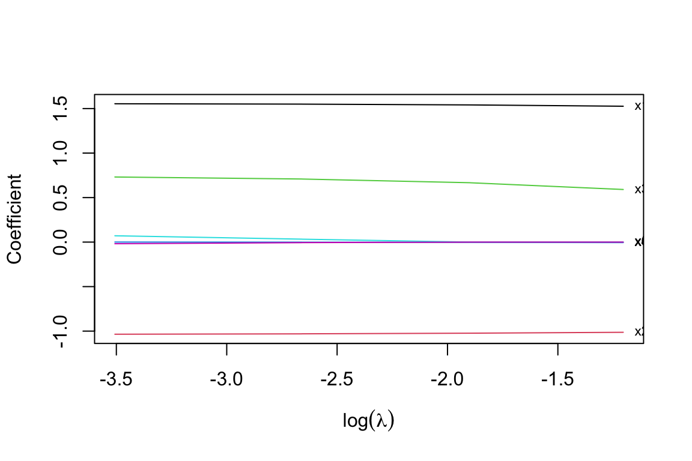

library(spares)Getting started
1 Load the package
Install the SPARES source archive from its local download directory if it is not already installed:
install.packages("spares_1.0.0.tar.gz", repos = NULL, type = "source")Load the package before running the examples:
2 One interface, different penalties
The Lasso (Tibshirani 1996), Group Lasso (Yuan and Lin 2006) and sparse-group Lasso (Simon et al. 2013) motivate the main penalty families. Structured sparsity with overlapping groups is discussed by Jenatton, Audibert, and Bach (2011); adaptive weighting originates in the Adaptive Lasso (Zou 2006) and its group extension (Wang and Leng 2008). For a broader treatment, see Hastie, Tibshirani, and Wainwright (2015). These references describe the underlying methods; they do not establish every extension implemented in SPARES.
Estimation uses ADMM; its general framework and convergence conditions are reviewed by Boyd et al. (2011).
SPARES fits Lasso, Group Lasso, overlapping-group and sparse-group paths, with fixed or least-squares-pilot-based adaptive weights. The loss is \(\|y-X\beta-Z\theta\|^2/(2n)\), so the parameter called \(\gamma\) in an unnormalized RSS/2 objective is \(n\lambda\).
set.seed(21)
n <- 60
X <- matrix(rnorm(n*6),n,6)
colnames(X) <- paste0('x',1:6)
y <- as.numeric(1+X%*%c(1.5,-1,.7,0,0,0)+rnorm(n,sd=.5))
groups <- rep(1:3,each=2)
control <- list(maxit=10000,abstol=1e-9,reltol=1e-9,print.out=FALSE)
fit <- lmreg(X,y,penalty='adaglasso',groups=groups,profile='exponential',
intercept=TRUE,standardize=TRUE,
lambda=c(.3,.15,.07,.03),control=control)
print(fit)
#> SPARES: adaptive glasso
#> 60 observations; 6 penalized predictors; 0 additional unpenalized predictors
#> lambda nzero converged
#> 0.30 4 TRUE
#> 0.15 4 TRUE
#> 0.07 6 TRUE
#> 0.03 6 TRUEstandardize=TRUE scales predictors by sample standard deviations and centers them only when an intercept is requested. It does not standardize the response or the supplied unpenalized covariates Z. Adaptive pilots, weights and penalties refer to these working coefficient coordinates; changing scales generally changes the penalty. Coefficients and predictions are transformed back to original units. All preprocessing is retained. The legacy standardize.data=TRUE scales the response as well and cannot be combined with standardize=TRUE; it is still excluded from DoF calculations.
coef(fit,s=.07)
#> s=0.07
#> (Intercept) 1.0707681857
#> x1 1.5499944953
#> x2 -1.0303063568
#> x3 0.7087414216
#> x4 -0.0005907048
#> x5 0.0331123454
#> x6 -0.0057908462
predict(fit,newx=X[1:3,,drop=FALSE],s=.07)
#> s=0.07
#> [1,] 2.4933851
#> [2,] 0.4859352
#> [3,] 6.0129774
plot(fit,xvar='loglambda',label=TRUE)
A lambda between fitted knots uses linear interpolation, not an exact refit. Without s, extraction and prediction return the whole fitted path. With unpenalized covariates, pass the matching newz at prediction time; an intercept requested by intercept=TRUE is added automatically.
References
Boyd, Stephen, Neal Parikh, Eric Chu, Borja Peleato, and Jonathan Eckstein. 2011. “Distributed Optimization and Statistical Learning via the Alternating Direction Method of Multipliers.” Foundations and Trends® in Machine Learning 3 (1): 1–122. https://doi.org/10.1561/2200000016.
Hastie, Trevor, Robert Tibshirani, and Martin Wainwright. 2015. Statistical Learning with Sparsity: The Lasso and Generalizations. Monographs on Statistics and Applied Probability 143. Boca Raton: CRC Press, Taylor & Francis Group.
Jenatton, Rodolphe, Jean-Yves Audibert, and Francis Bach. 2011. “Structured Variable Selection with Sparsity-Inducing Norms.” J. Mach. Learn. Res. 12: 2777–2824.
Simon, Noah, Jerome Friedman, Trevor Hastie, and Robert Tibshirani. 2013. “A Sparse-Group Lasso.” J. Comput. Graph. Statist. 22 (2): 231–45. https://doi.org/10.1080/10618600.2012.681250.
Tibshirani, Robert. 1996. “Regression Shrinkage and Selection via the Lasso.” Journal of the Royal Statistical Society. Series B (Methodological) 58 (1): 267–88.
Wang, Hansheng, and Chenlei Leng. 2008. “A Note on Adaptive Group Lasso.” Computational Statistics & Data Analysis 52 (12): 5277–86.
Yuan, Ming, and Yi Lin. 2006. “Model Selection and Estimation in Regression with Grouped Variables.” Journal of the Royal Statistical Society: Series B (Statistical Methodology) 68 (1): 49–67.
Zou, Hui. 2006. “The Adaptive Lasso and Its Oracle Properties.” J. Amer. Statist. Assoc. 101 (476): 1418–29. https://doi.org/10.1198/016214506000000735.